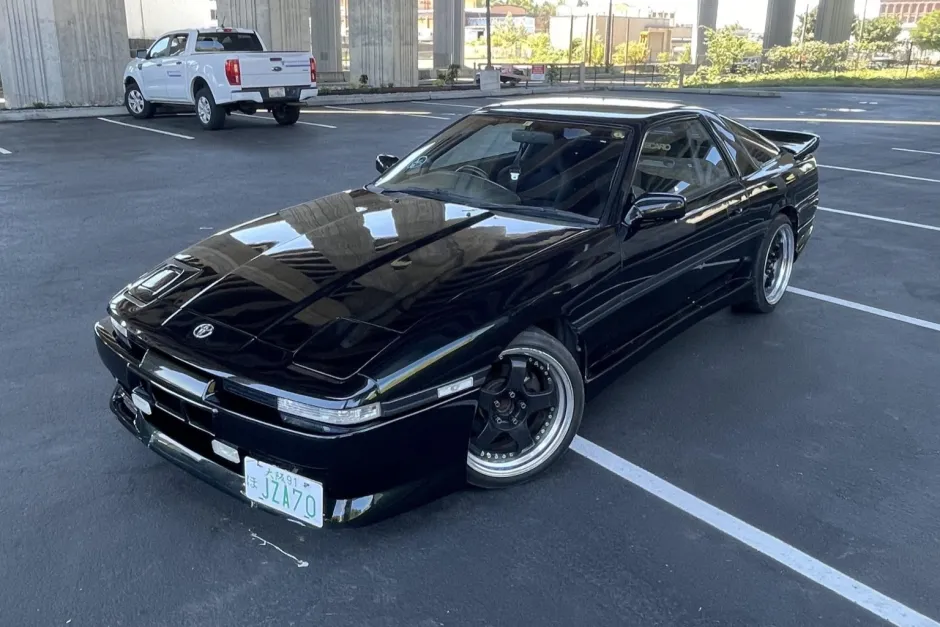
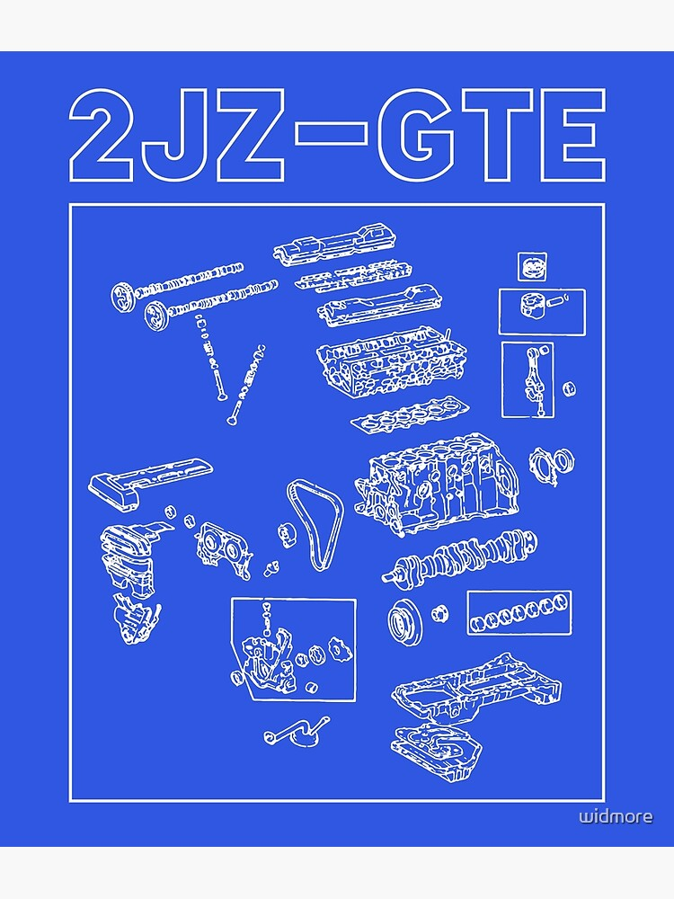

The toyota supra mk3 1992
6 
1992 Toyota Supra has just the right blend of performance and comfort. The JZA70 Supra was unfortunately never offered in the US with the proper drivetrain. This model featured the 1JZ-GTE twin-turbo engine, which as time has proven, is a far superior engine than the 7M that was offered here stateside. And unlike the later generation, MKIV's the MKIII offers tremendous performance and a slew of impressive factory options all at a fraction of the price.
for more infothe 2jz engine

gemaakt door yanik rijgersberg nagekeeken door umit